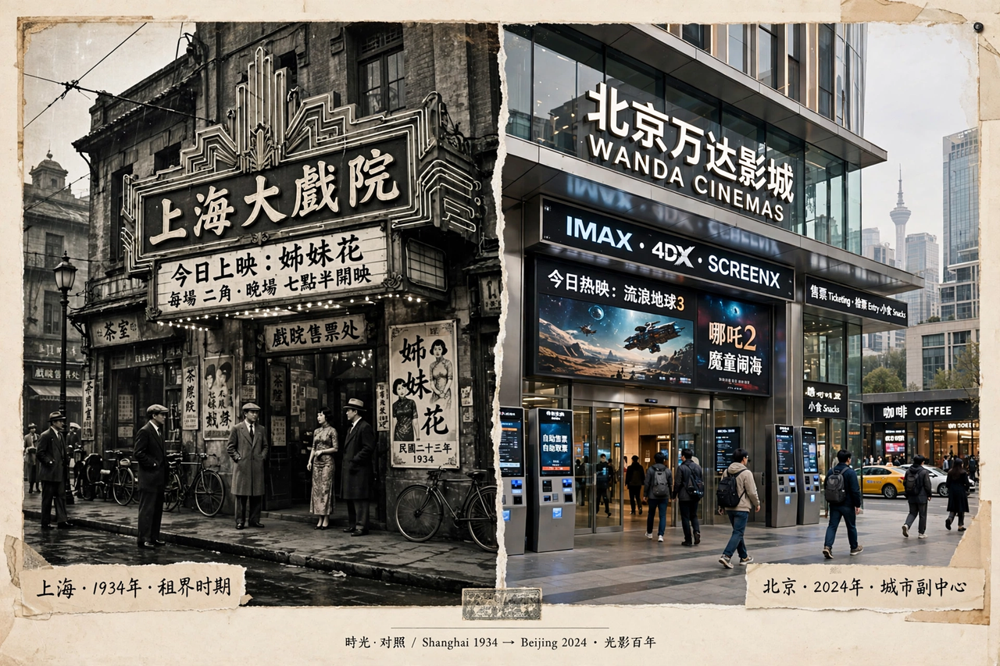

Cinema of China
| Cinema of China | |
|---|---|
 | |
| First film | Dingjun Mountain (1905) |
| Major centres | Shanghai (historical), Hong Kong, Beijing, Taiwan |
| Key movements | Shanghai golden age, Hong Kong New Wave, Fifth Generation, Sixth Generation |
| Box office | Among the largest national film markets in the world |
The cinema of China is one of the oldest and largest film traditions in the world. Historians commonly divide Chinese-language cinema into the industries of mainland China, Hong Kong and Taiwan, which developed separately for much of the twentieth century. Chinese cinema began in 1905 with Dingjun Mountain, a recording of a Peking opera performance.
Shanghai golden age
In the 1930s Shanghai became the centre of Chinese filmmaking, producing socially conscious classics such as Street Angel (1937) and Crossroads (1937) with stars like Ruan Lingyu and Zhou Xuan. After the Second Sino-Japanese War, films such as Spring in a Small Town (1948) are now considered among the greatest Chinese films ever made.
The PRC and the generations system
After 1949 the mainland industry was nationalized and organized in state studios, producing socialist realist works; production nearly stopped during the Cultural Revolution, when only a handful of filmed "model operas" were permitted. After 1978 scholars grouped mainland directors into "generations": the Fifth Generation of Beijing Film Academy graduates — Zhang Yimou, Chen Kaige and Tian Zhuangzhuang — won international prizes in the late 1980s with Yellow Earth (1984), Red Sorghum (1987) and Farewell My Concubine (1993), the only Chinese-language film to win the Palme d'Or. The Sixth Generation (Jia Zhangke, Wang Xiaoshuai, Lou Ye) turned to contemporary urban life, often working independently.
Hong Kong and Taiwan
Hong Kong developed a populist commercial cinema famous worldwide for the martial arts film, the work of directors such as Tsui Hark and Wong Kar-wai, and stars including Chow Yun-fat and Stephen Chow. Taiwan produced the contemplative art cinema of Edward Yang, Hou Hsiao-hsien and Tsai Ming-liang. Since the 2000s, co-productions and a vast domestic market have made mainland China a global box-office power, with domestic blockbusters such as Wolf Warrior 2 (2017) and The Battle at Lake Changjin (2021) among the highest-grossing films in history.